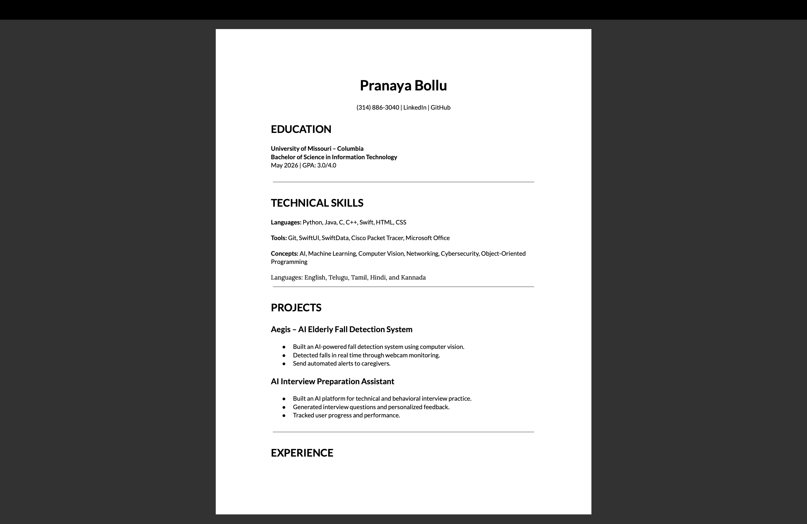
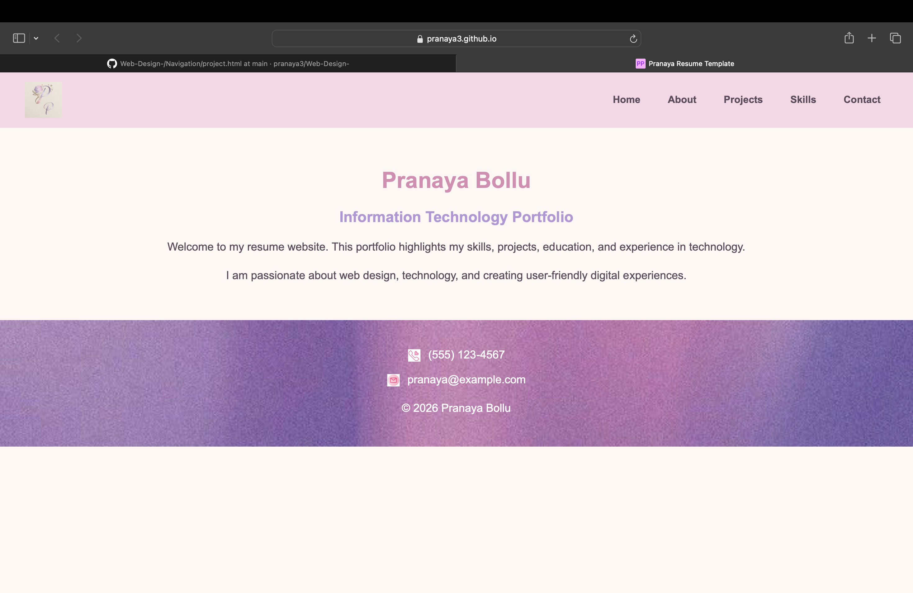
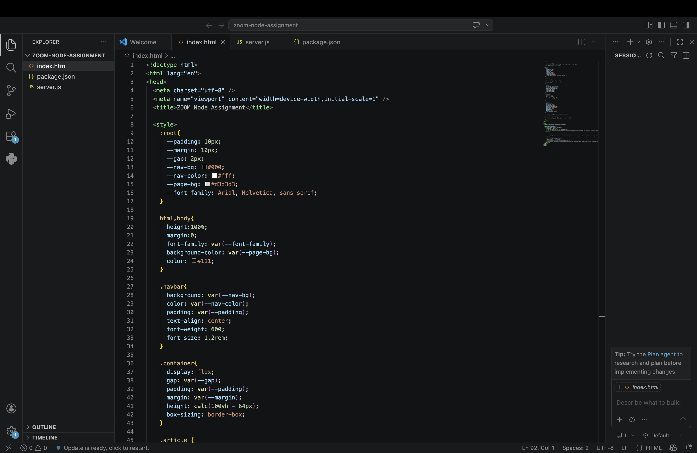
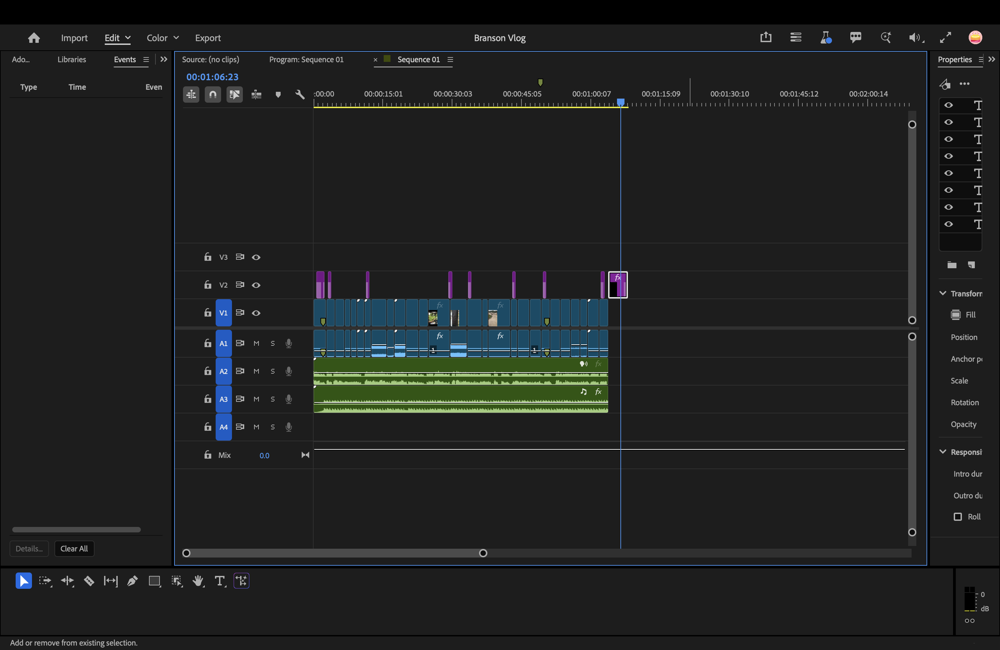

Projects
Throughout my Information Technology program, I have completed projects that strengthened my web development, programming, and technology skills. Below are some of the areas where I have gained experience.

Resume Website
I designed and developed a responsive personal portfolio website using HTML and CSS. This project improved my understanding of semantic HTML, accessibility, responsive design, and navigation.

Web Design Projects
I created responsive websites using HTML5, CSS3, Grid, Flexbox, and media queries. These projects helped me understand modern web design and mobile-friendly layouts.

Technology Projects
My coursework included programming, networking, cybersecurity, databases, and problem-solving using current technology tools and best practices.

Continuous Learning
I continue developing my technical skills through personal projects, online tutorials, certifications, and hands-on experience with new technologies.